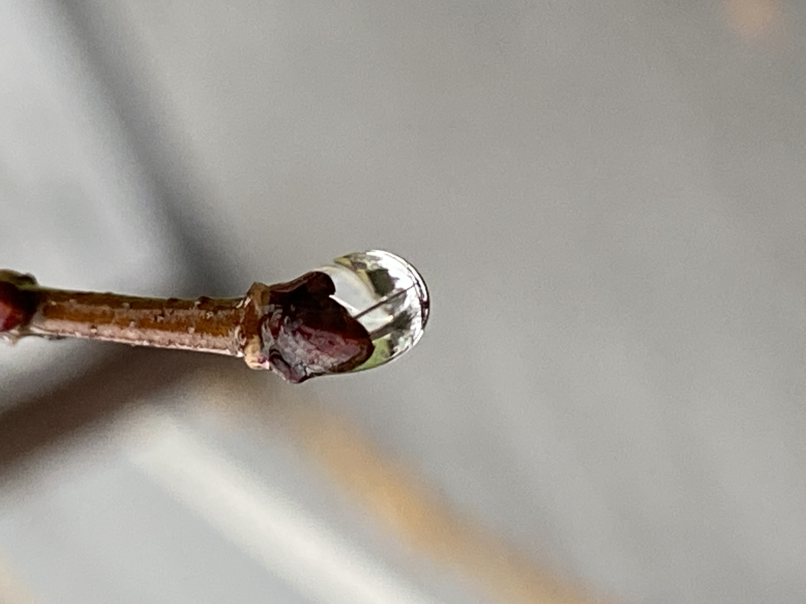
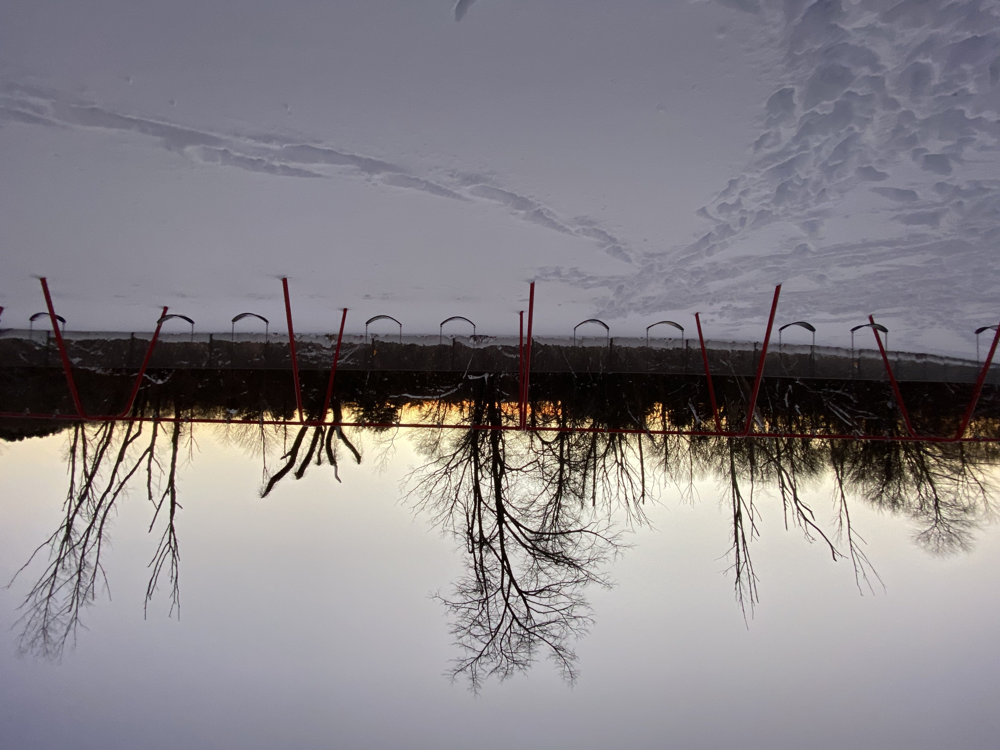
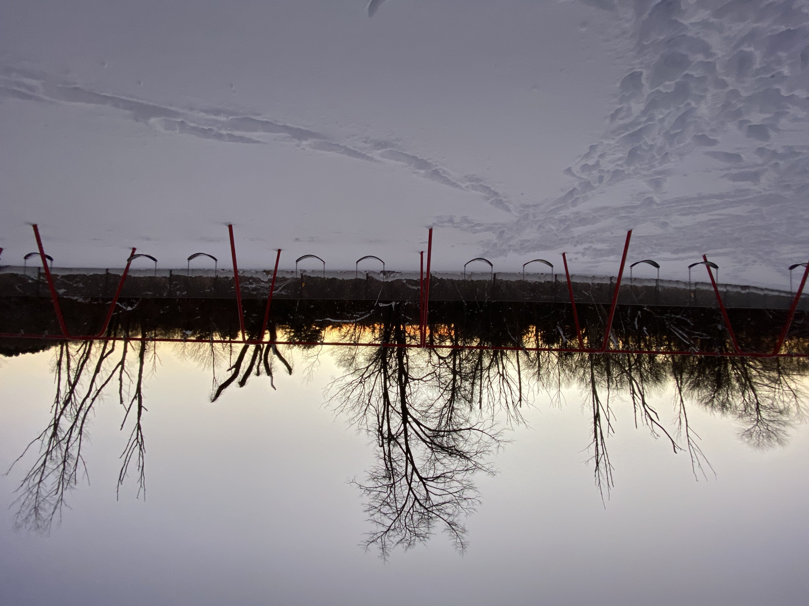

Greetings
Welcome to my home page! Glad to have you here.
Image: Me hanging out with Norbert Wiener's old desk.
Hi! I'm Richard. I'm a current class of 2025 undergrad, and a resident of Next House. I'm planning to major in Course 1 (Civil and Environmental Engineering). Check out some of the things I love to do below!
Nature
I love learning about and enjoying nature. Check out some of my most recent adventures below!
Nature PhotosMusic
I am a fan of music and can usually be found humming a tune, in addition to playing an instrument!
Musical Fun


Over IAP, after a rainy day, I took some photos of the water droplets hanging off of the branches on the trees in my front yard! Trees are my favorite part of nature, as they provide so many benefits and have interesting features/functions that I used to never know about or consider.
A few weeks ago, when we had the giant snowstorm right before the beginning of the semester, I started to pay attention to the snow, and was surprised to be able to see snowflakes! I was able to get a very blurry image by using a camera, but this was a great reminder that the world's natural wonders never cease to stun me, even in the little things.
